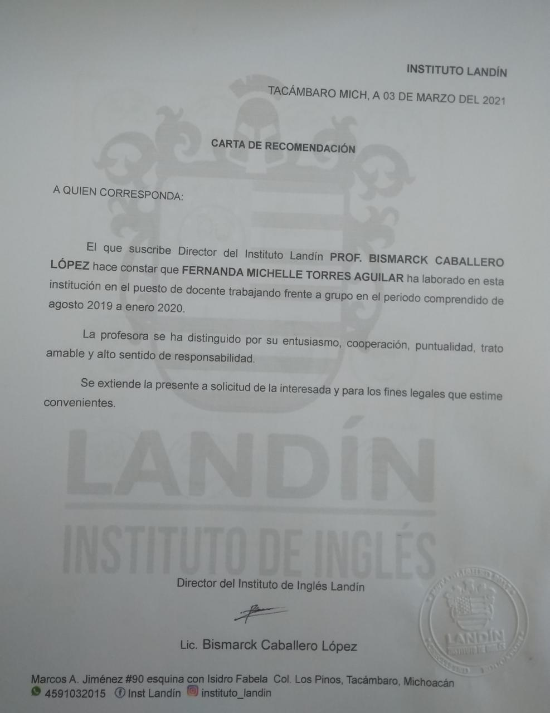

Desde mayo del año 2021 he estado impartiendo clases a nivel profesional en ByJus Future School, una empresa hindú de e-learning donde se imparten clases de programación,
matemáticas, música, minecraft y roblox.
El currículum profesional que imparto incluye lenguajes como javascript, python, hmtl y css, entre otros; todo esto enfocado a la creación de videojuegos. Entre los temas que enseñamos las primeras 40 clases se encuentran:

En Universidad Da Vida me contrataron como community manager, donde realicé una estrategia de marketing para aumentar el alcance del público y fortalecer la identidad de la marca. Gracias a esto, logramos un alcance de más del 100% en menos de un mes.
Aquí adjunto algunos diseños que cree para la campaña usando canva, adobe, y otras herramientas:
.png)
.png)
En 100% Farma, una farmacia con sucursales en todo el estado de michoacán, trabajé desde el año 2016 hasta el año 2021 durante vacaciones de verano e invierno.
Trabajé como vendedora de mostrador y como gerente. Entre mis labores como gerente se encontraban:

En el Instituto Landín trabajé como maestra de inglés básico para niños y adolescentes, además de que fui encargada de un club conversacional para adolescentes y adultos.
